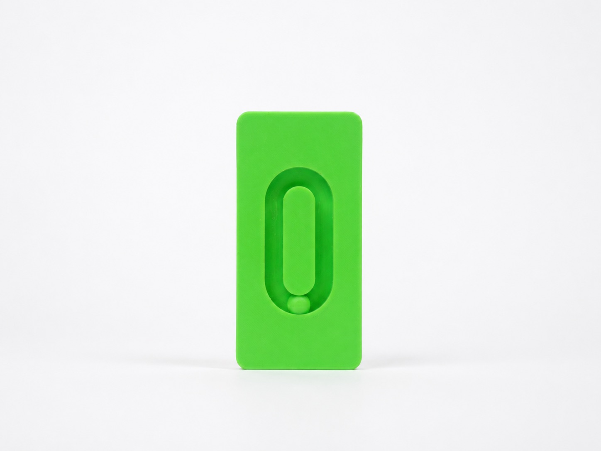
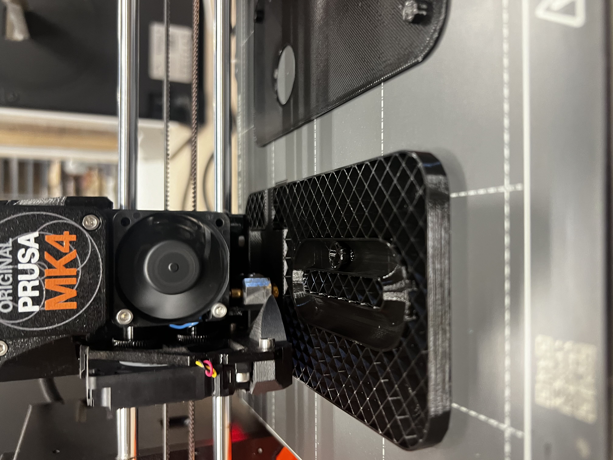
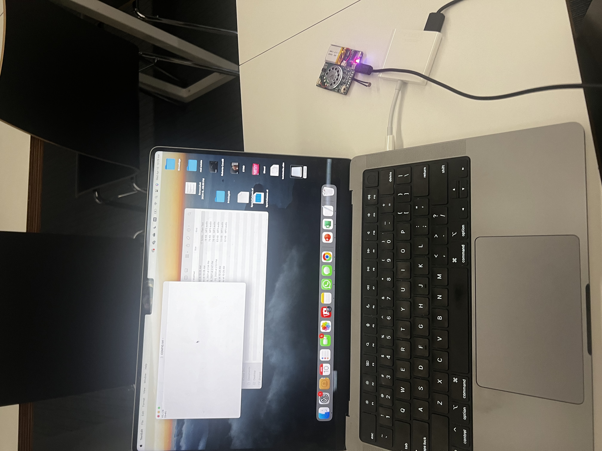
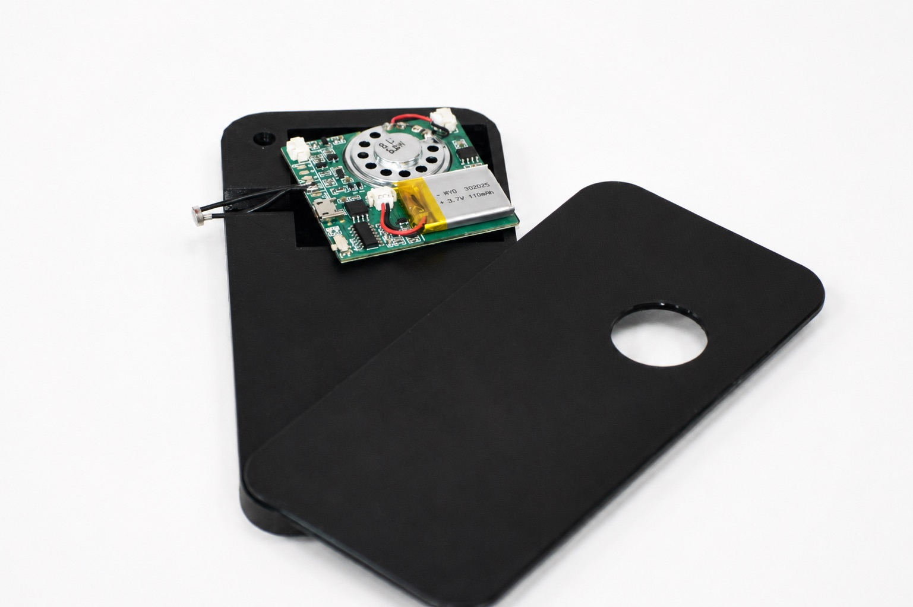

Alert
Alert randomly triggers an alert that mimics the notification noises of popular social media apps. As we have been trained to react to these notifications we immediately pick up the device, but are instead faced with a breathing board. This will force a short meditation that rebalances dopamine levels. Ultimately resulting in either more meditation and increased happiness or will mitigate the adverse effects of notification addiction.


Project Brief: Design an object that encourage a responsible use of social media, raising questions about our addiction to them.
Research into adolescent development revealed a strong connection between social media use and declining mental health. Children between the ages of 10 and 14 are particularly vulnerable to social media influence, while excessive use has been linked to increased rates of anxiety, depression, and sleep deprivation. At the same time, studies on meditation demonstrated its ability to improve focus, increase dopamine levels, and support emotional well-being. This led to a shift in the project's direction: rather than simply discouraging social media use, the focus became creating an object that encourages meditation as a positive counterbalance to notification addiction, using tactile interaction and principles of conditioning to promote healthier habits.
Redefined Brief: Design an object that encourages meditation and balances the the negative effects of notification addiction
Process
The device was developed as a handheld object containing a speaker programmed to trigger at random intervals. When activated, it plays a notification-like sound that encourages the user to pick it up. Instead of delivering information, the object presents a guided breathing path that can be followed through touch.




Developing the physical form required extensive prototyping. One of the biggest challenges was designing the internal track and determining the correct tolerances for the rolling element, which required multiple iterations of dimensions, positions, and support structures before achieving smooth movement. Balancing the weight of the device was equally important, leading to the addition of sand during the printing process to create a more stable and satisfying interaction. Integrating the electronics and programming the speaker to activate unpredictably added another layer of technical complexity.
Alert transforms a habit typically associated with distraction into an opportunity for mindfulness. By combining tactile meditation with familiar notification cues, the project explores how the systems that drive digital addiction can be repurposed to encourage healthier behaviors.
Skills: Product Design, Rapid Prototyping, Electronics Integration, Physical Computing, User Experience Design, 3D Printing.
Tools: Rhino, 3D Printing, Arduino, Electronics, Coding.